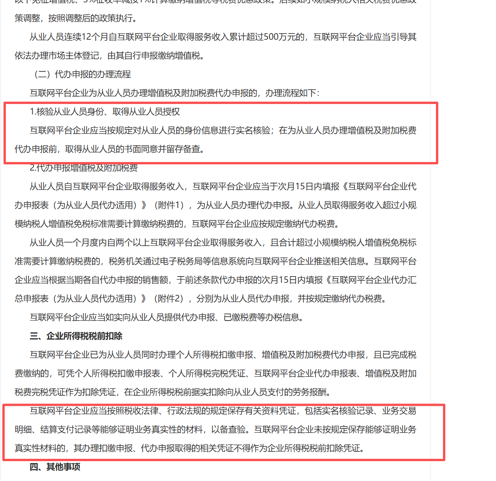
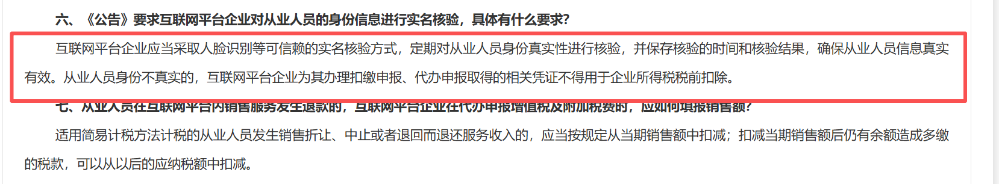
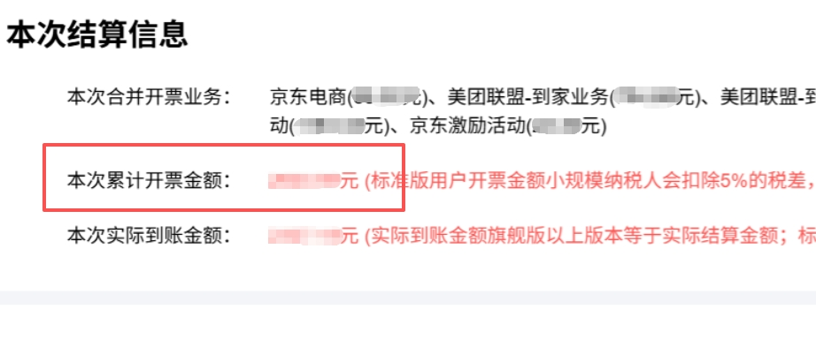
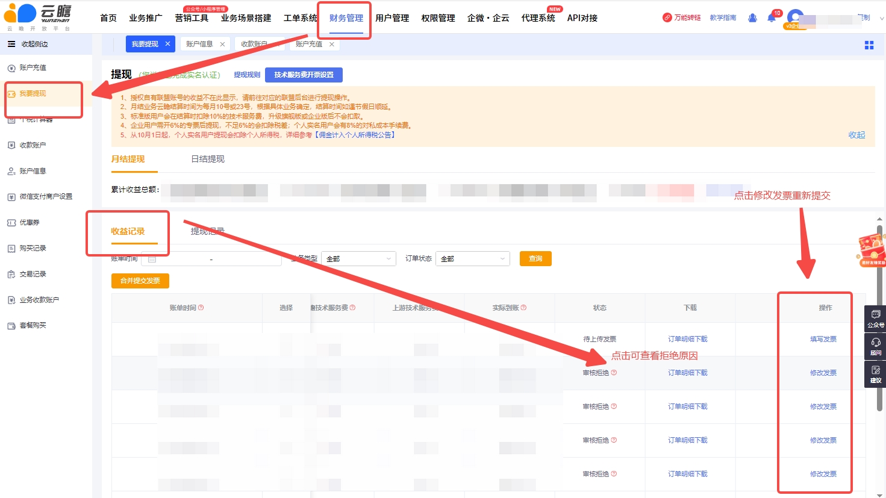

入账日是几号？
源文档记录平台常见入账节点为每月 10 日和 23 日，节假日顺延；不同业务的周期不同，必须打开业务详情查看。佣金入账后才形成可提现余额。
完整梳理佣金入账、提现审核、税务发票、C 端返现、日结垫资、费用展示与企业账户核验。
源文档记录平台常见入账节点为每月 10 日和 23 日，节假日顺延；不同业务的周期不同，必须打开业务详情查看。佣金入账后才形成可提现余额。
休息日和节假日顺延；正常工作日也可能因数据量较大、技术处理和审核而从下午陆续入账至晚上，完成后通常有短信通知。不要在当天上午直接判定异常。
最常见原因是佣金尚未结算入账。先核对业务详情中的入账周期、订单结算状态和实名状态；完成入账后余额才会更新。
源文档口径为入账后可随时提交申请，没有额外时间窗口限制。
历史记录为个人支付宝 5 元起、银行卡 11 元起，企业开票提现无金额门槛。该门槛应以当前提现页面为准，客服不能只引用旧话术。
源文档曾记录个人自然人每月最高 8 万、单次最多 79,500 元，并建议超额时调整金额或使用合规子账户。限额受打款渠道和政策影响，必须由财务或当前页面确认。
原文区分月结/日结、个人/企业以及自动/人工审核：个人小额可能自动实时打款，超阈值人工审核；企业在合格发票提交后处理。旧阈值包括月结 100 元、日结 1,000 元，旧审核口径为 3 个工作日。实际以当前提现页和财务通知为准。
互联网平台为平台内经营者和从业人员办理扣缴或代办申报时，需要以可信赖方式核验身份真实性。无法完成实名核验时，打款渠道可能无法申报和打款。
源文档提供两种备用合规路径，且注明“除非必要不使用”：个人到税务机关开具对应金额发票后联系客服申请；或使用企业主体实名并开具对应发票后申请提现。执行前需由财务确认当前可用性。
源文档记录自 2025-10-01 起，平台佣金计入全年应纳税所得额，并按平台内累计收入对应档位预扣，年度汇算时再结合全年收入退补税；文档用累计 3.6 万元对应 10% 档位作为示例。税务规则必须以国家税务总局最新政策及财务执行口径为准，不向用户保证固定税率。
通过“个人所得税”App 查询。源文档记录税务机关一般在每月 15 日前处理上月税款，具体展示时间以 App 为准。
确保三项一致：云瞻【账户信息】手机号的号卡实名、云瞻实名认证、提现收款账户实名。再检查姓名和证件信息是否完全一致、手机号是否本人实名办理。
源文档解释为 OCR 核对身份要素，并用证件照片完成人脸比对、确认本人意愿。资料只能在平台正式认证页面提交；客服群不收集证件原图、完整身份证号和银行卡信息。


源文档仅接受“生产生活服务＊信息技术服务费”或“生产生活服务＊信息服务费”两类之一。开具前应核对后台和财务的最新专票要求。
按后台【本次结算信息】中的“本次累计开票金额”开票，不按预估收益、可提现余额或自行计算金额。

进入【财务管理】→【账单通知】→【收益记录】，点击“状态”查看拒绝原因；在右侧【操作】点击“修改发票”，更正后重新上传。审核未通过不会打款。

可能来自版本技术服务费、对私/对公结算成本、税费等。源文档曾用“标准版扣 10%，旗舰版以上免除”解释差异，该说法会随业务和版本变化；应按本次结算信息逐项解释，不套用单一比例。
源文档记录该发票随提现申请自动发起，用户不能单独手动申请；提交提现时设置专票/普票，之后在发票记录查看。当前页面若有变化，以财务系统为准。
可以。官网【财务管理】→【交易记录】，找到对应购买项目并点击开票，填写抬头信息后申请。
源文档记录：使用微信或支付宝支付时，可在发票抬头填写企业信息；个人实名使用个人银行卡对公转账时不能开公司发票。下单前应先核对支付方式与抬头要求。
可选择平台垫资打款或商户自主打款。源文档曾记录平台打款扣 7% 税点、自主打款由商户自行结算；该比例和能力需以【分佣管理】→【提现设置】当前页面为准。
代理系统可采用合规灵活用工打款方式。具体服务商、合同、申报方式和税务责任需由财务确认。
是。2026-08-05 群同步明确：无论自主打款还是平台打款，用户端都需要实名；旧“是否实名”开关已不生效。认证失败先确认小程序已更新到最新版本，再通过安全工单提交必要的脱敏信息升级，不能在群里收集证件。
日结由平台在上游正式结算前先行垫资，只适用于平台指定业务，并会产生对应服务费；最终仍以正式账单为准。
2026-04-01 起的历史上线记录确认，订单结算展示会先体现上游技术服务费和渠道费用；用户购买新版本后，平台技术服务费减免仅从版本生效日开始。购买前已产生但尚未结算的订单，仍按产生时适用的旧版本规则处理。
历史消息中的拆分公式和具体百分比只能用于还原差异，当前页面、合同和财务账单具有更高优先级。
2026-05-28 的排查记录发现，企业提现可能仍读取【账户信息】中的对公账户，而不是仅读取后来修改的【收款账户】；该问题当时进入财务讨论，未形成正式关闭结论。
{kind=link}
{kind=link}